Ratios can help us describe the relationship between two variables.
A Quick Refresher.
A variable is a numerical quantity that can take on different values at different times or in different situations.
Quantities that do not change are called constants.
Activity6.2.1.Proportional Variables.
The table shows the price of gasoline at your local gas station on a Saturday in April. There are two variables in the table: the \(\blert{\text{Number of gallons}}\) of gasoline purchased and the \(\blert{\text{Total price}}\text{.}\) Compute the ratios in the third column of the table.
Gallons of Gasoline
Total Price
\(\dfrac{\text{Price}}{\text{Gallons}}\)
\(\vphantom{\dfrac{1}{2}}\) 4
$10.60
\(\hphantom{00000}\)
\(\vphantom{\dfrac{1}{2}}\)6
$15.90
\(\hphantom{00000}\)
\(\vphantom{\dfrac{1}{2}}\)8
$21.20
\(\hphantom{00000}\)
\(\vphantom{\dfrac{1}{2}}\)12
$31.80
\(\hphantom{00000}\)
\(\vphantom{\dfrac{1}{2}}\)14
$37.10
\(\hphantom{00000}\)
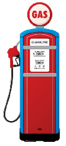
You should find that the ratio \(\dfrac{\text{total price}}{\text{number of gallons}}\text{,}\) or price per gallon, is constant. It is the same for each pair of values of the variables. This result agrees with common sense: the price per gallon of gasoline is the same no matter how many gallons you buy.
The table shows the population of a town. The variable \(\blert{\text{Years}}\) means the age of the town, or the number of years since the town was established. \(\blert{\text{Population}}\text{,}\) of course, means the number of people who live in the town. Compute the ratios in the third column of the table.
Years
Population
\(\dfrac{\text{People}}{\text{Years}}\)
\(\vphantom{\dfrac{1}{2}}\) 10
432
\(\hphantom{00000}\)
\(\vphantom{\dfrac{1}{2}}\)20
932
\(\hphantom{00000}\)
\(\vphantom{\dfrac{1}{2}}\)30
2013
\(\hphantom{00000}\)
\(\vphantom{\dfrac{1}{2}}\)40
4345
\(\hphantom{00000}\)
\(\vphantom{\dfrac{1}{2}}\)50
9380
\(\hphantom{00000}\)
The ratios in this example, \(\dfrac{\text{number of people}}{\text{number of years}}\text{,}\) give the rate of growth of the population in people per year. You can see from the table that this ratio is not constant; in fact, it increases as time goes on.
Definition.
Two variables are said to be proportional if their ratio is constant, or always the same.
In Activity 6.2.1, we see that the total price of gasoline is proportional to the number of gallons you buy. On the other hand, the population of the town is not proportional to its age.
As with the price of gasoline, sometimes it seems clear that two variables are proportional. But to check, we can identify several pairs of corresponding values for the variables, and then compute their ratios.
Example6.2.1.
Tuition at Woodrow University is $30 per unit added to an enrollment fee of $100. Is the tuition proportional to the number of units you take?
Solution.
To compute the tuition, we multiply the number of units by 30 and add 100 to the result. For example, if you take 6 units, your tuition is
We make a table showing several pairs of variables and compute their ratios.
Number of Units
Tuition
\(\dfrac{\text{Tuition}}{\text{Units}}\)
\(\vphantom{\dfrac{1}{2}}\) 6
280
46.67
\(\vphantom{\dfrac{1}{2}}\)8
340
42.50
\(\vphantom{\dfrac{1}{2}}\)15
550
36.67
The ratio \(\dfrac{\text{tuition}}{\text{units}}\text{,}\) or tuition per unit, is not constant, so the tuition is not proportional to the number of units.
Checkpoint6.2.2.
Anouk is traveling by motorhome across Alaska at 60 miles per hour. Compute the ratios in the table.
Hours
Miles
\(\dfrac{\text{Miles}}{\text{Hours}}\)
\(\vphantom{\dfrac{1}{2}}\) 3
180
\(\hphantom{00000}\)
\(\vphantom{\dfrac{1}{2}}\)6
360
\(\hphantom{00000}\)
\(\vphantom{\dfrac{1}{2}}\)8
480
\(\hphantom{00000}\)
Is the distance Anouk has traveled proportional to the time she has traveled?
Answer.
Yes
From the Examples above, you may have discovered that two variables are proportional if one variable is a constant multiple of the other.
Example6.2.3.
Is the area of a square proportional to the length of a side?
Solution.
We’ll make a table of values for squares of various lengths.
Length of side (in)
Area (sq in)
Ratio \(~\dfrac{\text{Area}}{\text{Length}}\)
\(2\)
\(4\)
\(2\)
\(3\)
\(9\)
\(3\)
\(4\)
\(16\)
\(4\)
From the table we see that the ratio of area to length is not constant, so the area of a square is not proportional to the length of a side.
Checkpoint6.2.4.
Is the perimeter of a square proportional to the length of a side?
Hint: Make a table of values, or recall the formula for the perimeter of a square.
Solution.
Yes
Subsection6.2.2Proportional Reasoning
Here is a simple way to look at proportional variables. If we list multiples of each variable, their ratio stays the same, and we create a ratio table. We can sometimes use a ratio table to answer questions about proportional variables.
Example6.2.5.
Five boxes of crayons cost Maryellen $4.25. How much will it cost to buy one box of crayons for each of the 25 students in her class?
Solution.
Because the cost of the crayons is proportional to the number of boxes, we can make a table. We add copies of 5 boxes and $4.25 until we reach 25 boxes.
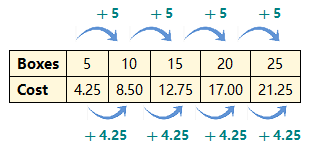
We find that 25 boxes of crayons will cost $21.25.
Checkpoint6.2.6.
Three acres of land can support 220 apple trees. How many apple trees can you grow on 12 acres of land? Use a ratio table to find the answer.
\(\vphantom{\dfrac{1}{2}}\)Acres
3
\(\hphantom{00000}\)
\(\hphantom{00000}\)
\(\hphantom{00000}\)
\(\vphantom{\dfrac{1}{2}}\)Trees
220
\(\hphantom{00000}\)
\(\hphantom{00000}\)
\(\hphantom{00000}\)
Answer.
880
Note6.2.7.
Did you notice that we can use multiplication instead of addition to solve the problems above? (After all, multiplication by a whole number is really just repeated addition.)
In the Example we can multiply 5 boxes of crayons by \(\alert{5}\) to get 25 boxes of crayons, so we can multiply $4.25 by \(\alert{5}\) to find the cost.
The ratio of Boxes to Cost is not changed if we multiply both Boxes and Cost by the same number. This is the same principle that allows us to build a fraction, so we call this the build-up strategy for solving a problem about proportional variables, and we call \(\alert{5}\) the scale factor.
Walking on a treadmill at 3 miles per hour for one hour burns 219 calories. How many calories will Shayla burn if she walks for 20 minutes?
Solution.
The number of calories you burn is proportional to the time you walk. Because 20 minutes is \(\frac{1}{3}\) of an hour, we should multiply the number of calories by \(\frac{1}{3}\) also. (We are using the build-up strategy, with a scale factor of \(\frac{1}{3}\text{.}\)) In 20 minutes Shayla will burn
The relationship between proportional variables is a very simple and useful one. The ratio between the variables must stay constant. So if we multiply one variable by a scale factor, we know exactly what will happen to the other variable. If you double the amount of gasoline you buy, say from 6 gallons to 12 gallons, the price will also double. If you have 4 times the amount of land, you can plant 4 times as many apple trees.
Checkpoint6.2.9.
The table shows the amount of some foreign currencies you could buy with ten US dollars on April 17, 2016. Complete the table to show how much you could buy with a US 20-dollar bill.
The build-up strategy works well if there is a nice number to multiply by. But sometimes it is easier to compute a unit rate, as we did in Section 6.1.
Example6.2.10.
Six bottles of VeryBerry soda costs $10.50. How much would 10 bottles cost?
Solution.
The cost of the soda is proportional to the number of bottles you buy. But 10 is not a nice multiple of 6, so instead we’ll calculate the unit cost of a bottle of soda. We’ll simplify the ratio by dividing top and bottom by 6.
Jayden drove 132 miles on 5 gallons of gas. How far can he drive on a full tank of 18 gallons? Use the unit rate strategy to find the answer. Start with a ratio.
We have used two methods to solve problems involving proportional variables:
Build-up strategy: multiply both variables by the same amount
Unit rate strategy: simplify the ratio by division
Both of these strategies come from the definition of proportional.
Earlier we saw that the build-up strategy works because we can build or reduce a fraction without changing its value. Now let us see why the unit rate strategy works.
Recall that multiplication and division are opposite operations. Every division fact can be written as a multiplication fact, and vice versa. For example,
The nutrition label gives the following information.
\(\vphantom{\dfrac{1}{2}}\)Cola
12-ounce can
20-ounce bottle
1-liter (34 ounces)
\(\vphantom{\dfrac{1}{2}}\)Sugars
36 grams
60 grams
102 grams
Because the amount of sugar is proportional to the size of the serving, the ratio \(\dfrac{\text{grams of sugar}}{\text{ounces of cola}}\) is constant:
\begin{equation*}
\dfrac{\text{grams of sugar}}{\text{ounces of cola}} = \dfrac{36}{12} = \dfrac{60}{20} = \dfrac{102}{34} = 3
\end{equation*}
So \(\blert{3}\) is the unit rate for \(\dfrac{\text{grams of sugar}}{\text{ounces of cola}}\text{.}\) And because of the relationship between multiplication and division, we see that
\begin{gather*}
\dfrac{\text{grams of sugar}}{\text{ounces of cola}} = \blert{3} \phantom{000} \text{is the same as}\\
\text{grams of sugar} = \blert{3} \times \text{ounces of cola}
\end{gather*}
In particular, to answer the question in the problem,
We have used the unit rate strategy to see that there are 48 grams of sugar in a 16-ounce serving of cola.
Checkpoint6.2.13.
Five teaspoons of sugar is equivalent to 21 grams of sugar. How many teaspoons of sugar are there in a 12-ounce can of cola?
Answer.
8.57 teaspoons
Subsection6.2.4Graphing Proportional Variables
The relationship between proportional variables is a simple one, and their graphs are also simple. In Section 5.5 we practiced plotting points and graphing an equation. Here is a brief review.
Quick Refresher: How to Plot Points.
The first variable (the input variable) tells us the location of the point in the horizontal direction.
The second variable (the output variable) tells us its location in the vertical direction.
Quick Refresher: Steps for Graphing an Equation.
Make a table of values. Choose values for the input variable and use the equation to find the values of the output variable.
Choose appropriate scales and label the axes.
Plot the points from the table, and connect them with a smooth curve.
Activity6.2.3.Graphing Proportions.
Delbert and Francine are classmates at City College. Before handing in big assignments such as term papers or lab reports, they make copies of their work. Delbert uses QuikCopy, and keeps track of the copying fee for each assignment.
Delbert’s Copying Fees
\(\vphantom{\dfrac{1}{2}}\)Number of pages
14
27
35
\(\vphantom{\dfrac{1}{2}}\)Cost (cents)
112
216
280
Francine copies her assignments at Copy World.
Francine’s Copying Fees
\(\vphantom{\dfrac{1}{2}}\)Number of pages
12
26
32
\(\vphantom{\dfrac{1}{2}}\)Cost (cents)
72
156
192
Verify that the cost of copying is proportional to the number of pages at both QuikCopy and at Copy World.
Delbert’s Copying Fees
\(\vphantom{\dfrac{1}{2}}\)Number of pages
14
27
35
\(\vphantom{\dfrac{1}{2}}\)Cost(cents)
112
216
280
\(\vphantom{\dfrac{1}{2}}\)Cost/page
\(\hphantom{00000}\)
\(\hphantom{00000}\)
\(\hphantom{00000}\)
Francine’s Copying Fees
\(\vphantom{\dfrac{1}{2}}\)Number of pages
12
26
32
\(\vphantom{\dfrac{1}{2}}\)Cost(cents)
72
156
192
\(\vphantom{\dfrac{1}{2}}\)Cost/page
\(\hphantom{00000}\)
\(\hphantom{00000}\)
\(\hphantom{00000}\)
How do you know that the cost of copying is proportional to the number of pages copied?
Who is paying the higher price for copying?
Plot the data for Delbert’s copying fees on the grid. (Include a point for the cost of copying 0 pages.)
Connect the data points with a straight line.
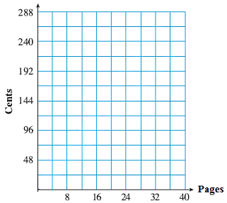
Similarly, plot the data for Francine’s copying fees on the same grid, and connect them with a straight line.
Which line is rising more rapidly?
From Activity 6.2.3, we observe two facts about the graphs of proportional variables.
Graphs of Proportional Variables.
The graph is a straight line.
The graph passes through the point \((0, 0)\text{.}\) In other words, if one variable is zero, the other variable must be zero also.
Note6.2.14.
You might want to compare the graphs of copying costs in Activity 6.2.3 with the graph of tuition from Example 6.2.1, shown below. Recall that the cost of tuition was not proportional to the number of units you take, and the graph does not pass through the point \((0,0)\text{.}\)
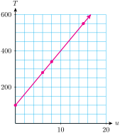
We can recover information about proportional variables from their graphs. Here is a reminder about reading points on a graph.
How to Read Points.
The location of the point in the horizontal direction tells us the value of the first variable (the input variable).
The location of the point in the vertical direction tells us the value of the second variable (the output variable).
Example6.2.15.
Kira buys granola in bulk at the health food store. There are three standard containers customers can use, as shown by the highlighted points on the graph.
What are the size and cost of each standard container?
What is the unit cost of the granola, in cents per ounce?
If we extend the graph to include 25 ounces of granola, how much taller should we make the vertical axis?
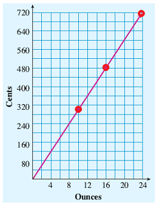
Solution.
We read the ounces and cents values for each of the three points. The standard containers are 10 ounces for $3.00, 16 ounces for $4.80, and 24 ounces for $7.20.
To find the unit cost, we compute the ratio of cost to ounces.
\begin{equation*}
\dfrac{\text{300 cents}}{\text{10 ounces}} = \text{30 cents per ounce}
\end{equation*}
So we would need to extend the vertical axis by another 30 units, to 750.
Checkpoint6.2.16.
Esme and Marya both work part-time as data-entry technicians at different companies. The graph shows their earnings in terms of the number of hours they work.
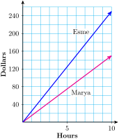
Who earns more per hour? Explain how you know.
Use the graph to fill in the table.
\(\vphantom{\dfrac{1}{2}}\)Hours
4
8
10
\(\vphantom{\dfrac{1}{2}}\)Esme’s earnings
\(\hphantom{00000}\)
\(\hphantom{00000}\)
\(\hphantom{00000}\)
\(\vphantom{\dfrac{1}{2}}\)Esme’s earnings
\(\hphantom{00000}\)
\(\hphantom{00000}\)
\(\hphantom{00000}\)
Compute each woman’s wages in dollars per hour.
Esme:
Marya:
Answer.
Esme. Her graph is steeper.
\(\vphantom{\dfrac{1}{2}}\)Hours
4
8
10
\(\vphantom{\dfrac{1}{2}}\)Esme’s earnings
100
200
250
\(\vphantom{\dfrac{1}{2}}\)Marya’s earnings
60
120
150
Esme: $25 per hr; Marya: $15 per hr
Subsection6.2.5Vocabulary
variable
constant
proportional
ratio table
scale factor
unit rate
input variable
output variable
Exercises6.2.6Practice 6-2
1.
What is a variable?
2.
How can we tell whether two variables are proportional?
3.
Name two strategies for solving problems involving proportional variables.
4.
If two variables are proportional, what does their graph look like?
Exercise Group.
For Problems 5-8,
Complete the table of values.
Decide whether the two variables are proportional.
5.
To make Classic Pop, you need three ounces of Secret Syrup for every 32 ounces of carbonatedwater. Is the amount of Secret Syrup proportional to the amount of carbonated water?
\(\vphantom{\dfrac{1}{2}}\)Carbonated water (oz)
32
64
96
\(\vphantom{\dfrac{1}{2}}\)Secret Syrup (oz)
\(\hphantom{00000}\)
\(\hphantom{00000}\)
\(\hphantom{00000}\)
6.
To brew coffee, you put in one scoop of coffee for every six ounces of water, plus one scoop for the pot. Is the amount of coffee needed proportional to the amount of water used?
\(\vphantom{\dfrac{1}{2}}\)Water (oz)
6
12
18
\(\vphantom{\dfrac{1}{2}}\)Coffee (scoops)
\(\hphantom{00000}\)
\(\hphantom{00000}\)
\(\hphantom{00000}\)
7.
The thickness of a book in millimeters can be found by adding 6 millimeters (for the thickness of the covers) to 1 millimeter for every 25 pages. Is the thickness of the book proportional to the number of pages?
\(\vphantom{\dfrac{1}{2}}\)Pages
25
50
75
\(\vphantom{\dfrac{1}{2}}\)Thickness (mm)
\(\hphantom{00000}\)
\(\hphantom{00000}\)
\(\hphantom{00000}\)
8.
A four-liter can of paint will cover 150 square feet of primed surface. Is the amount of paint you need proportional to the area you have to paint?
\(\vphantom{\dfrac{1}{2}}\)Area (sq ft)
150
300
450
\(\vphantom{\dfrac{1}{2}}\)Paint (liters)
\(\hphantom{00000}\)
\(\hphantom{00000}\)
\(\hphantom{00000}\)
Exercise Group.
Use the build-up method to solve Problems 9-12.
9.
A recipe for one dozen chocolate chip cookies calls for 8 ounces of chocolate chips. How many ounces of chocolate chips will you need to make 30 cookies?
10.
A 160-pound male burns 600 calories playing tennis for one hour. How many hours of tennis would it take to burn 3500 calories, or 1 pound of fat?
11.
Ben has a four-inch wide by six-inch long photo of himself scaling Half-Dome in Yosemite. If he has it enlarged to a poster four feet long, how wide will the poster be? (Hint: How many inches are in a foot?)
12.
A general purpose bird seed contains 2 cups of sunflower seed for every 5 cups of millet. How much millet should be mixed with 5 quarts of sunflower seed? (Hint: How many cups are in a quart?)
Exercise Group.
Use the unit rate method to solve Problems 13-16.
13.
The road to the camp grounds at Pine Lake State Park is 1.5 miles long. On the map, the road measures \(\frac{3}{4}\) inch. If Pine Lake is \(3\frac{1}{4}\) inches long on the map, how long is the lake actually?
14.
A cinnamon bread recipe calls for \(1\frac{1}{4}\) tablespoons of cinnamon and 5 cups of flour. How much cinnamon would be needed if 8 cups of flour are used?
15.
Gary is six feet tall. At 4 p.m., his shadow is 10 feet long. How tall is the spruce tree on his front lawn if its shadow is 38 feet long at 4 p.m.?
16.
In a survey of 800 voters, 625 favored a gun control ballot measure. If there are 15,000 voters in Senator Fogbank’s district, how many can be expected to favor gun control?
Exercise Group.
For Problems 17-20,
Which method, build-up or unit rate, do you think would be best-suited to solve the problem?
Use your method to solve the problem.
17.
The Quality Control department at Major Motors found that in a sample of 500 electronic toggle units, 12 were defective. How many defective units should they expect in a shipment of 3600 units?
18.
In order to estimate the number of deer in a certain wooded area, the Forest Service tagged and released 50 deer. A month later they captured 60 deer and found that 9 of them were tagged. Approximately how many deer are there in the woods?
19.
The average American takes a shower that lasts 8.5 minutes and uses 17.85 gallons of water. How much water does a 10-minute shower use?
20.
An 8-ounce cafe mocha contains 150 calories. How many calories are in a 20-ounce cafe mocha?
Exercise Group.
For Problems 21-24, explain why using a proportion would not give an accurate answer to the question.
21.
Andre ran 100 meters in 10 seconds. How far can he run in one hour?
22.
It took 18 musicians 20 minutes to play a serenade by Mozart. How long would it take 36 musicians to play the same piece of music?
23.
Jacquelyn grew from 18 inches long at birth to 48 inches tall at age 7. How tall will she be at age 21?
24.
The temperature rose from 40° at 6 am to 70° at noon. What will the temperature be at 6 pm?
Exercise Group.
For Problems 25-28,
Make a table of values for the variables.
Plot the data points and connect them with a straight line.
Use a suitable strategy to answer the question.
On the graph, circle the point that shows your answer to part (c).
25.
The distance traveled at a constant speed is proportional to the time taken. A research submarine traveled 45 miles in 3 hours. How long will it take them to travel 300 miles?
\(\vphantom{\dfrac{1}{2}}\)Time (hrs)
Distance (mi)
\(\vphantom{\dfrac{1}{2}} \hphantom{00000}\)
\(\hphantom{00000}\)
\(\vphantom{\dfrac{1}{2}} \hphantom{00000}\)
\(\hphantom{00000}\)
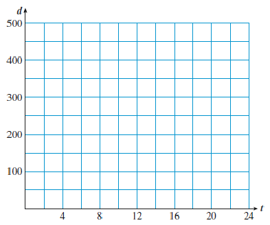
26.
Megan’s wages are proportional to the time she works. Megan made $60 for 8 hours work as a lab assistant. How long will it take her to make $500?
\(\vphantom{\dfrac{1}{2}}\)Time (hrs)
Wages($)
\(\vphantom{\dfrac{1}{2}} \hphantom{00000}\)
\(\hphantom{00000}\)
\(\vphantom{\dfrac{1}{2}} \hphantom{00000}\)
\(\hphantom{00000}\)
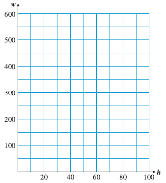
27.
The cost of a turkey is proportional to its weight. A 16-pound turkey costs $12.80. How much does a 22-pound turkey cost?
\(\vphantom{\dfrac{1}{2}}\)Weight (lb)
Cost ($)
\(\vphantom{\dfrac{1}{2}} \hphantom{00000}\)
\(\hphantom{00000}\)
\(\vphantom{\dfrac{1}{2}} \hphantom{00000}\)
\(\hphantom{00000}\)
28.
The amount of pure copper produced by Copperfield Mine is proportional to the amount of ore extracted. A new lode produced 24 grams of copper from 800 grams of ore. How many grams of copper will one kilogram of ore yield??
\(\vphantom{\dfrac{1}{2}}\)Ore (g)
Copper (g)
\(\vphantom{\dfrac{1}{2}} \hphantom{00000}\)
\(\hphantom{00000}\)
\(\vphantom{\dfrac{1}{2}} \hphantom{00000}\)
\(\hphantom{00000}\)
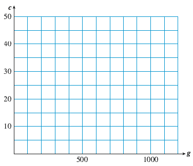
Exercise Group.
Problems 29-32 consider some formulas from geometry.
29.
The perimeter of a square is four times the length of its side. Complete the table.
\(\vphantom{\dfrac{1}{2}}\)Side length (cm)
2
5
8
11
\(\vphantom{\dfrac{1}{2}}\)Perimeter (cm)
\(\hphantom{00000}\)
\(\hphantom{00000}\)
\(\hphantom{00000}\)
\(\hphantom{00000}\)
Graph your equation, using the values in your table.
Is the perimeter of a square proportional to the length of its side?
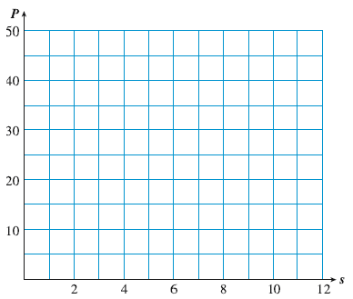
30.
The circumference of a circle (the distance around the circle) is \(2\pi\) times its radius. Complete the table. You can use 3.14 as an approximation for \(\pi\text{.}\)
\(\vphantom{\dfrac{1}{2}}\)Radius (in)
2
5
7
10
\(\vphantom{\dfrac{1}{2}}\)Circumference (in)
\(\hphantom{00000}\)
\(\hphantom{00000}\)
\(\hphantom{00000}\)
\(\hphantom{00000}\)
Plot the data points on the grid below, using the values in your table, and connect them with a smooth curve.
Is the circumference of a circle proportional to its radius?
31.
The area of a square is the square of the length of its side. (Recall that to "square" a number means to multiply the number by itself. Complete the table.
\(\vphantom{\dfrac{1}{2}}\)Side length (m)
2
5
6
8
\(\vphantom{\dfrac{1}{2}}\)Area (sq cm)
\(\hphantom{00000}\)
\(\hphantom{00000}\)
\(\hphantom{00000}\)
\(\hphantom{00000}\)
Plot the data points on the grid below, using the values in your table, and connect them with a smooth curve.
Is the area of a square proportional to the length of its side?
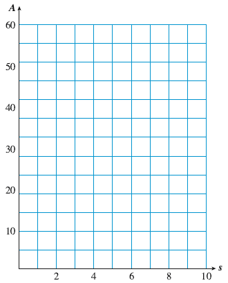
32.
The area of a circle is \(\pi\) times its the square of its radius. Complete the table. You can use 3.14 as an approximation for \(\pi\text{.}\)
\(\vphantom{\dfrac{1}{2}}\)Radius (ft)
2
3
4
5
\(\vphantom{\dfrac{1}{2}}\)Area (sq ft)
\(\hphantom{00000}\)
\(\hphantom{00000}\)
\(\hphantom{00000}\)
\(\hphantom{00000}\)
Plot the data points on the grid below, using the values in your table, and connect them with a smooth curve.
Is the area of a circle proportional to its radius?